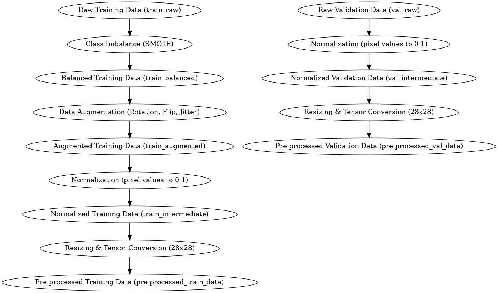
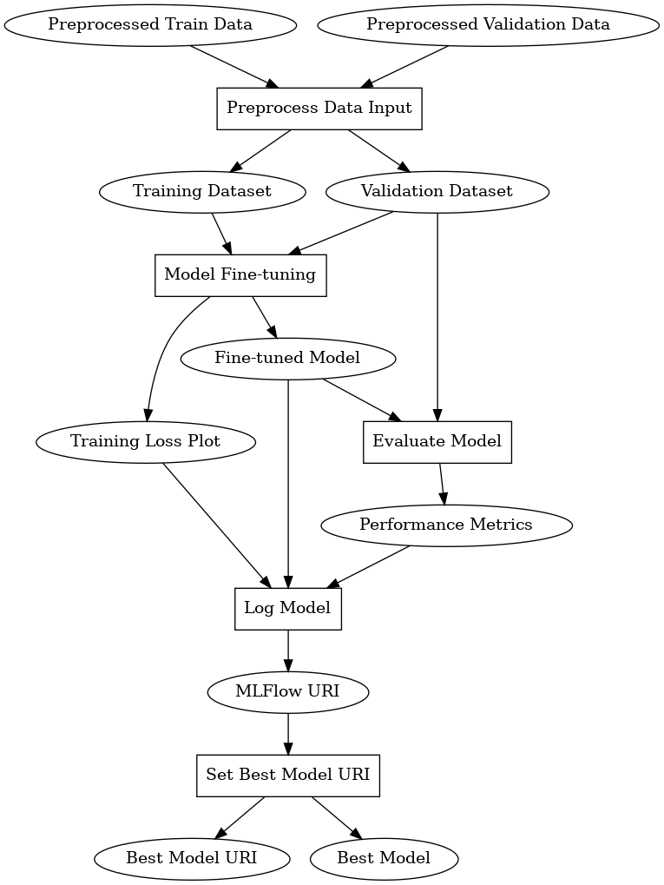
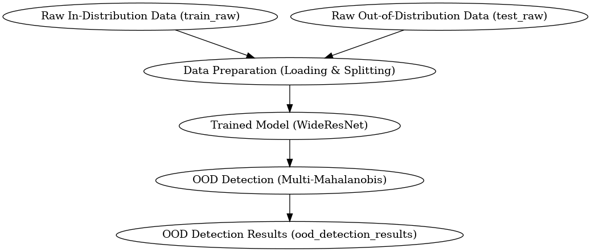
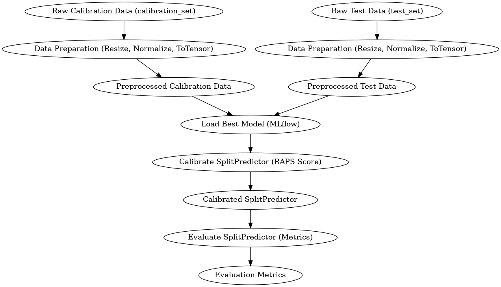
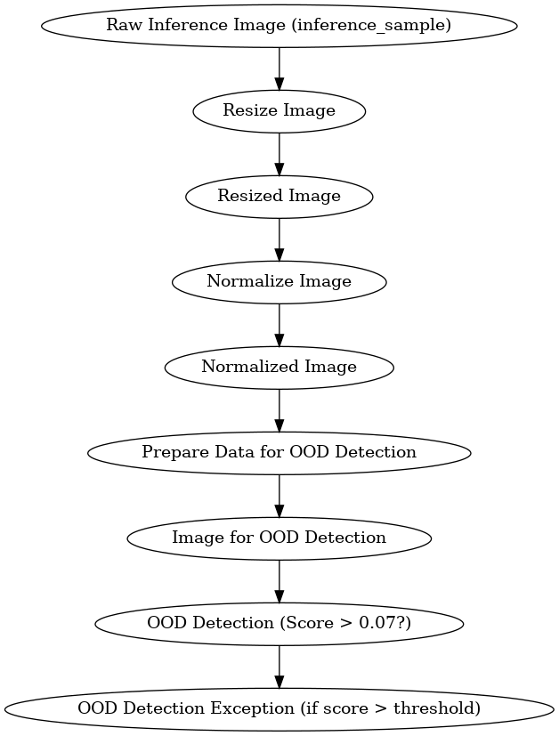
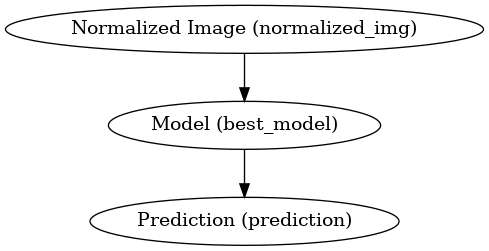
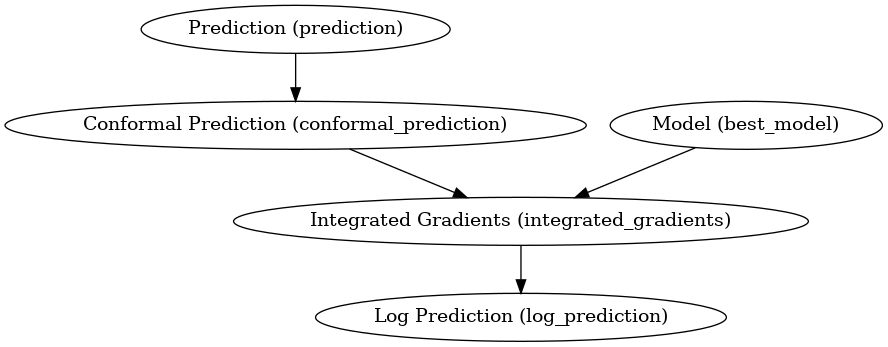

MLOps Card for OncoDerm AI
Date: 2024-11-29
Author: Sai Madhavan G
Version: v1.0
Overview
This MLOps card serves as a comprehensive record of the tools, methodologies, and decision-making processes employed during the development and deployment of the OncoDerm AI project. The document aims to ensure transparency, reproducibility, and maintainability across the project’s lifecycle.
Workflow Management with Kedro
Overview
We used Kedro to organize our workflow into modular, reusable components called nodes and pipelines. Kedro allows seamless integration of data engineering and machine learning tasks by clearly separating data, code, and configuration.
Features of Kedro
- Modular Workflow: Nodes encapsulate individual tasks, which are then assembled into pipelines.
- Data Catalog: Facilitates streamlined handling of datasets.
- Reproducibility: Enhances collaboration and ensures reproducibility of experiments.
- Configuration Management: Centralized configuration for pipelines and datasets.
- Visualization: Interactive pipeline visualization using Kedro-Viz.
Implementation
- Pipeline Design: Divided the classification task into stages—data preprocessing, model training, evaluation, and deployment.
- Reusability: Nodes for data preprocessing can be reused across different datasets.
- Flexibility: Easy to modify pipelines for different experiments without disrupting the overall workflow.
Challenges
- Since all the pipelines are defined to be DAGs, we couldn’t realize use cases where we needed a circular dependency between nodes.
- The learning curve for Kedro was steep initially, but the documentation and community support were helpful.
- Converting kedro pipelines to inference pipelines for deployment was not straightforward.
Version and Installation
Version Used:
Kedro 0.19.9Installation Command:
pip install kedro==0.19.9
Resources
Testing Strategy
Overview
We adopted pytest as our primary testing framework, which integrates well with Kedro. The goal was to ensure that individual nodes and pipelines function as expected, enhancing the reliability of the workflow.
Implementation
- Unit Tests: Unit tests were written for most nodes to validate their individual functionality. For example:
- Testing data transformations in preprocessing nodes.
- Verifying model predictions in evaluation nodes.
- Test Coverage: While many of nodes have been tested, some remain to be covered. These tests are planned to ensure full confidence in the pipeline’s robustness.
- Continuous Integration (CI): Integrated testing into CI pipelines to catch errors early in the development cycle using pre-commit hooks.
Pytest Integration with Kedro
Kedro’s structure makes it easier to write modular tests:
- Testing isolated nodes by mocking inputs and outputs.
Challenges
- Some edge cases for untested nodes are still under review.
Version and Installation
Version Used:
pytest 8.3.3Installation Command:
pip install pytest==8.3.3
Resources
Automated Documentation Generation
Overview
To maintain up-to-date and user-friendly documentation for the project, we utilized Quartodoc and Quarto. These tools helped automate the generation of clear and structured documentation for both developers and stakeholders.
Implementation
Quartodoc:
- Used to extract docstrings from our codebase and generate API documentation.
- Ensured consistency and minimized the manual effort of documenting changes in the code.
- Simplified navigation through the project’s functions, classes, and modules.
Quarto:
- Served as the publishing tool for creating documentation in a variety of formats (e.g., HTML, PDF).
- Enabled the integration of Quartodoc-generated API docs with explanatory text, diagrams, and project details.
Features
- Dynamic API Updates: Whenever the codebase changes, documentation is regenerated to reflect the updates.
- Markdown Integration: Allowed seamless embedding of markdown for customization.
Workflow
- Documentation Generation: The pipeline was integrated with the development process to trigger automatic documentation generation during builds using pre-commit hooks.
- Integration with CI/CD: Documentation can be auto-deployed to a hosted platform for easy access.
Example Command
To generate documentation:
quartodoc build
quarto renderChallenges
- Custom Configurations: Initial setup required additional effort to configure Quartodoc for the project’s structure.
- Consistency: Ensuring all code had properly formatted docstrings to maximize automation benefits.
- Resources: Quartodoc didn’t have a lot of community resources for troubleshooting.
- Parser Not Working: Some issues were faced with the parser not recognizing certain docstrings.
Version and Installation
Version Used:
Quartodoc 0.9.1,Quarto 1.2.57Installation Command:
pip install quartodoc==0.9.1
Resources
Code Linting with Ruff
Overview
To ensure code quality, maintain consistent styling, and catch potential bugs early, we integrated Ruff as the primary linting tool. Ruff is a fast and flexible Python linter designed to handle large projects efficiently.
Key Benefits
- Performance: Processes codebases significantly faster than traditional linters.
- Broad Rule Support: Implements rules from popular linting tools like Flake8, pylint, and pyupgrade.
- Customizability: Allows fine-grained configuration for the project’s specific requirements.
Implementation
- Setup:
- A configuration file (
pyproject.toml) was created to define project-specific rules and ignore patterns.
- A configuration file (
- Pre-Commit Hook:
- Integrated Ruff into the CI pipeline to enforce linting rules on every pull request.
- Codebase-wide Audit:
- Performed an initial pass with Ruff to identify and fix legacy code issues.
Example Commands
To lint the codebase:
ruff check .To fix linting issues automatically:
ruff check --fix .Challenges
- Configuration Complexity: Understanding and fine-tuning the rules to match the project’s style guide.
- False Positives: Some rules flagged issues that were acceptable in the project context.
Version and Installation
Version Used:
Ruff 0.7.2Installation Command:
pip install ruff==0.7.2
Resources
Data Preprocessing Pipeline
Overview
The data preprocessing pipeline is a crucial step in preparing the dataset for training. In this project, the pipeline addresses several challenges like class imbalance, data augmentation, normalization, and conversion into tensors. The key steps in the pipeline are:
- Handling Class Imbalance using SMOTE (Synthetic Minority Over-sampling Technique).
- Data Augmentation using random transformations like rotation, flipping, and color jitter.
- Normalization of image pixel values.
- Resizing and Tensor Conversion for consistency in input size and format.
Key Functions
Class Imbalance with SMOTE:
- The function
class_imbalanceuses the SMOTE technique to oversample the minority class in the dataset, which helps improve model performance when training on imbalanced data. - Package Used:
imblearn(SMOTE)
- The function
Data Augmentation:
- Augmentations such as horizontal and vertical flips, rotations, and color jitter are applied using the
torchvision.transformsmodule. - Package Used:
torchvision - The
data_augfunction generates new samples for the dataset by applying these transformations multiple times to each image.
- Augmentations such as horizontal and vertical flips, rotations, and color jitter are applied using the
Normalization:
- The pixel values of the images are normalized to the range [0, 1] using the
normalizing_imagesfunction.
- The pixel values of the images are normalized to the range [0, 1] using the
Resizing and Tensor Conversion:
- Images are resized to a fixed size (28x28) and converted to tensors using
tensoring_resizingto ensure that they are in the correct format for model input.
- Images are resized to a fixed size (28x28) and converted to tensors using
Data Flow
- Input Data: The raw training and validation data (e.g.,
train_raw,val_raw) are passed through the pipeline. - Nodes:
- Class Imbalance: SMOTE is applied to the training data to address class imbalance.
- Data Augmentation: Random augmentations are applied to the training data to increase its diversity.
- Normalization and Resizing: The images are normalized and resized to ensure they are in the correct format.
- Outputs:
- The final outputs are pre-processed training (
pre-processed_train_data) and validation (pre-processed_val_data) datasets, which are ready for model training.
- The final outputs are pre-processed training (
How to Run
kedro run --pipeline data_preprocessingChallenges and Considerations
- Class Imbalance: SMOTE is a powerful technique for balancing the dataset, but it may create synthetic samples that do not perfectly represent real-world data. This can sometimes affect the model’s generalization ability.
- Augmentation: While data augmentation improves model robustness, it may also introduce noise. Care must be taken to select meaningful augmentations that mimic real-world variations.
- Normalization: Proper normalization is essential for neural networks, especially when using pre-trained models, as it ensures consistency in input data.
Version and Installation
SMOTE (imblearn):
Version:
0.12.4Installation:
pip install imbalanced-learn==0.12.4
Torchvision:
Version:
0.20.1Installation:
pip install torchvision==0.20.1
PIL (Pillow):
Version:
11.0.0Installation:
pip install Pillow==11.0.0
Model Training Pipeline
The Model Training Pipeline is responsible for preparing data, training a deep learning model, evaluating its performance, and logging the results for version control and reproducibility.
Overview
This pipeline is built using Kedro 0.19.8 and leverages PyTorch, MLFlow, and other utilities for efficient training and tracking. It includes the following stages:
- Data Preprocessing: Transforms raw input data into a suitable format for training.
- Model Fine-tuning: Uses a pre-trained model (e.g., ResNet18) and fine-tunes it on the dataset.
- Evaluation: Computes key metrics such as accuracy, F1-score, precision, and recall on validation/test datasets.
- Logging: Records model metrics, hyperparameters, and artifacts into MLFlow for tracking and comparison.
- Best Model Selection: Identifies the best model version based on performance metrics (e.g., F1-score).
Key Components
1. Preprocessing
- Resizes images to (224 ).
- Applies normalization with mean ([0.485, 0.456, 0.406]) and standard deviation ([0.229, 0.224, 0.225]).
- Converts image data to PyTorch Tensors for model compatibility.
2. Model Fine-tuning
- Supports ResNet18 with an updated fully connected layer for 7 output classes.
- Optimizer: Adam.
- Loss Function: CrossEntropyLoss.
- Tracks training and validation performance after each epoch using macro F1-score.
3. Evaluation
- Uses classification_report from Scikit-learn to compute detailed performance metrics.
- Outputs a dictionary summarizing accuracy, precision, recall, and F1-score.
4. Logging
- Logs model artifacts and metrics to MLFlow:
- Model weights and architecture.
- Training/validation F1-score trends.
- Loss curves.
- Enables reproducibility with experiment tracking.
5. Best Model Selection
- Automatically identifies and selects the best-performing model version using MLFlow’s client API.
Pipeline Nodes
Preprocess Data Input
- Input:
pre-processed_train_data,pre-processed_val_data. - Output:
train_dataset,val_dataset.
- Input:
Model Fine-tuning
- Input: Preprocessed datasets, model name, training parameters, device.
- Output: Fine-tuned model weights, training loss plot.
Evaluate Model
- Input: Model name, weights, test dataset, batch size, device.
- Output: Performance metrics dictionary.
Log Model
- Input: Model name, weights, hyperparameters, metrics, training loss plot.
- Output: MLFlow URI.
Set Best Model URI
- Input: Model name, MLFlow URI.
- Output: Best model URI, loaded model.
Tools and Libraries
| Library | Purpose | Version |
|---|---|---|
| PyTorch | Deep learning framework | 2.5.1 |
| MLFlow | Experiment tracking and artifact logging | 2.17.2 |
Installation
Install all required packages using the following command:
pip install torch matplotlib scikit-learn mlflowOutputs
- Fine-tuned Model: State dictionary (model_finetuned).
- Performance Metrics: Accuracy, precision, recall, F1-score (model_metrics).
- Visualization: Loss plots showing training and validation F1-scores.
- Logged URI: MLFlow model artifact URI (mlflow_uri).

OOD Detection Pipeline
Overview
The Out-of-Distribution (OOD) detection pipeline is essential for ensuring that a trained model can accurately classify data, even when it comes from different distributions than the training data. This pipeline incorporates various OOD detection methods, which help the model identify when incoming data differs significantly from the distribution on which it was trained. The main steps in the pipeline include:
- Data Preparation: Loading both in-distribution and out-of-distribution datasets.
- Model Training: Training a WideResNet model on the in-distribution data.
- OOD Detection using multiple techniques, including:
- Multi-Mahalanobis Distance (Multi-Mahalanobis)
- Maximum Softmax Probability (MSP)
- Relative Mahalanobis Distance (RMD)
Key Functions
Data Preparation:
- The
prepare_datafunction loads the in-distribution dataset (e.g., Dermamnist) and the out-of-distribution dataset (e.g., CIFAR-10) for testing the OOD detection methods. - Package Used:
medmnist,torchvision - The function splits the datasets into training, validation, and test sets, preparing them for model training and evaluation.
- The
Model Training (WideResNet):
- The function
train_wide_resnettrains a WideResNet model on the in-distribution dataset using standard image classification techniques. - Package Used:
torch,torchvision - This function ensures the model is well-optimized before applying the OOD detection methods.
- The function
Multi-Mahalanobis Detector:
- The
multi_mahalanobis_detectorfunction uses the Multi-Mahalanobis distance method to detect OOD data. It calculates the Mahalanobis distance at multiple layers of the WideResNet model. - Package Used:
pytorch-ood - This method identifies OOD samples by measuring the distance from each sample to the distribution of the in-distribution data.
- The
Data Flow
- Input Data: The raw in-distribution and out-of-distribution datasets (e.g., Dermamnist and CIFAR-10) are loaded.
- Nodes:
- Data Preparation: The
prepare_datafunction loads and splits the datasets into training and testing sets. - Model Training: The WideResNet model is trained using the
train_wide_resnetfunction. - OOD Detection: The
multi_mahalanobis_detectorfunction evaluates the model’s ability to detect out-of-distribution samples.
- Data Preparation: The
- Outputs:
- The final outputs include the model (
wide_resnet_model) and the OOD detection metrics (ood_detection_metrics), which indicate how well the model distinguishes between in-distribution and out-of-distribution data.
- The final outputs include the model (
How to Run
kedro run --pipeline ood_detectionChallenges and Considerations
- Dataset Choice: The choice of in-distribution (Dermamnist) and out-of-distribution (CIFAR-10) datasets is crucial. If the datasets differ significantly from the real-world data, the OOD detection methods might not generalize well.
Version and Installation
- Pytorch-OOD:
Version:
0.2.0Installation:
pip install pytorch-ood==0.2.0

Conformal Prediction Pipeline
Overview
The Conformal Prediction (CP) pipeline is used to generate predictive uncertainty estimates by constructing prediction regions for model outputs. In this project, the pipeline leverages a SplitPredictor and a RAPS score function for model calibration and evaluation. The key steps in the pipeline include:
- Data Preparation: Preprocessing the calibration and test sets by resizing and normalizing the data.
- Model Calibration: Calibrating the predictor model using a SplitPredictor, which adjusts predictions based on the provided calibration set.
- Model Evaluation: Evaluating the calibrated model on the test set to assess the performance and the reliability of the predictions.
Key Functions
- Data Preparation:
- The
data_prepfunction prepares the calibration and test datasets by applying necessary transformations like resizing, tensor conversion, and normalization usingCompose,Resize,Normalize, andToTensorfromtorchvision. - Package Used:
medmnist,torchvision
- The
- Model Calibration:
- The
calibrate_predictorfunction takes in the calibration dataset, loads the best model fromMLflow, and calibrates the SplitPredictor using the RAPS score function with specified significance and penalty parameters. - Package Used:
mlflow,torchcp
- The
- Model Evaluation:
- The
evaluate_predictorfunction evaluates the calibrated SplitPredictor on the test dataset and returns a set of metrics (e.g., accuracy, confidence). - Package Used:
torchcp
- The
Data Flow
- Input Data:
- Raw calibration (
calibration_set) and test (test_set) data are loaded and preprocessed using thedata_prepfunction.
- Raw calibration (
- Nodes:
- Data Preparation: The data is resized and normalized to a consistent format.
- Model Calibration: The SplitPredictor is trained and calibrated with the provided calibration set.
- Model Evaluation: The final model is evaluated on the test set to generate metrics.
- Outputs:
- The calibrated model (
cp_predictor) and the evaluation metrics (cp_metrics) are generated as outputs of the pipeline.
- The calibrated model (
How to Run
kedro run --pipeline conformal_predictionChallenges and Considerations
- Calibration: The calibration process requires careful selection of the calibration set. A poor calibration set can lead to misleading prediction intervals.
- Significance Level (α): The chosen value for α determines the confidence of the predictions, but too high of an α might make the model less confident, while too low could result in overly narrow intervals.
- Penalization: The penalty parameter affects the RAPS score function. Too high a penalty might lead to overly conservative predictions, whereas too low could lead to less reliable predictions.
Version and Installation
- TorchCP:
Version:
0.1.3Installation:
pip install torchcp==0.1.3

Inference Data Preprocessing Pipeline
Overview
The inference data preprocessing pipeline prepares images for inference and out-of-distribution (OOD) detection. This involves several steps to resize, normalize, and detect whether an image falls outside the model’s distribution. The key steps in the pipeline include:
- Image Resizing: Resizes the image to a standard size.
- Image Normalization: Normalizes the image using predefined mean and standard deviation values.
- Preparing Data for OOD Detection: Transforms the image into a format suitable for OOD detection using the
WideResNetmodel. - OOD Detection: Uses the
MultiMahalanobisdetector to compute an OOD score and raises an exception if the score exceeds a threshold.
Key Functions
Resize Image:
- The
resize_imagefunction resizes an image to the desired size and converts it into a tensor format. - Input: Image, target size.
- Output: Resized image tensor.
- The
Normalize Image:
- The
normalize_imagefunction normalizes an image using a given mean and standard deviation. - Input: Image tensor, mean and standard deviation.
- Output: Normalized image tensor.
- The
Prepare Data for OOD Detection:
- The
prepare_data_for_oodfunction transforms the image for OOD detection based on the pre-definedWideResNettransformation forcifar10-pt. - Input: Image.
- Output: Transformed image ready for OOD detection.
- The
OOD Detection:
- The
ood_detectionfunction uses theMultiMahalanobisdetector to compute an OOD score. If the score exceeds the threshold, anOutOfDistributionErroris raised. - Input: Image tensor, OOD detector, threshold.
- Output: OOD score or error if the threshold is exceeded.
- The
Data Flow
Input Data:
- Raw image data passed for preprocessing (
inference_sample).
- Raw image data passed for preprocessing (
Nodes:
- Resize Image: Resizes the image.
- Normalize Image: Normalizes the resized image.
- Prepare Data for OOD Detection: Prepares the image for OOD detection.
- OOD Detection: Detects if the image is OOD based on the computed score.
Outputs:
- The primary output is the normalized and resized image tensor
- The pipeline doesn’t produce output directly after OOD detection, but an exception is raised if an image is detected as OOD.
Hyperparameters:
- OOD Threshold: 0.07 (threshold above which an image is flagged as OOD)

Model Inference Pipeline
Overview
The model inference pipeline handles the process of predicting the output for an input image using the trained model. It involves passing the preprocessed image through the best available model and returning the model’s output. The key steps include:
- Model Prediction: Using the trained model to predict the output for the given input image.
Key Functions
- Predict:
- The
predictfunction takes an input image, sends it through the model, and returns the output tensor. - Input: Trained model, input image, and device.
- Output: Prediction tensor, which is the model’s output for the input image.
- The
Data Flow
Input Data:
- The preprocessed image (normalized) is passed into the model for inference (
normalized_img).
- The preprocessed image (normalized) is passed into the model for inference (
Nodes:
- Prediction: The image is passed through the trained model to generate a prediction.
Output:
- The model’s output, which is stored in the
predictionvariable.
- The model’s output, which is stored in the

Inference Post-Processing Pipeline
Overview
The inference post-processing pipeline is responsible for performing additional steps after the model prediction to improve the understanding and interpretability of the predictions. This includes generating conformal predictions, visualizing the model’s decision-making using integrated gradients, and logging the prediction. The key steps include:
- Conformal Prediction: Refines the model’s predictions using a SplitPredictor to account for uncertainty.
- Integrated Gradients: Visualizes the model’s decision-making by attributing importance scores to input features.
- Logging Predictions: Logs the predictions for future analysis and debugging.
Key Functions
- Conformal Prediction:
- The
conformal_predictionfunction refines the model’s output using conformal prediction, providing a confidence interval for the prediction. - Input: Model output tensor and a SplitPredictor.
- Output: List of refined predictions.
- The
- Integrated Gradients:
- The
integrated_gradientsfunction computes the feature attribution for the input image using the integrated gradients method, which highlights which parts of the image are most important for the model’s prediction. - Input: The model, processed image, raw image, and predictions.
- Output: Visualizations of the integrated gradients for each prediction.
- The
- Log Prediction:
- The
log_predictionfunction logs the final prediction using the Python logging library, allowing for easy tracking of the predictions. - Input: The refined predictions.
- Output: None (logs the prediction).
- The
Data Flow
- Input Data:
- The
predictionandcp_predictorare passed to the conformal prediction node. - The
best_model,normalized_img,resized_img, andconformal_predictionare passed to the integrated gradients node.
- The
- Nodes:
- Conformal Prediction: The model output is refined using the SplitPredictor.
- Integrated Gradients: Visualizations are generated to show which parts of the image contributed to the prediction.
- Logging: The final prediction is logged.
- Output:
- The post-processed prediction (
conformal_prediction), the integrated gradients visualizations, and the final logged prediction.
- The post-processed prediction (
Version and Installation
- Captum (for Integrated Gradients):
Version:
0.7.0Installation:
pip install captum==0.7.0

Inference API Deployment
To operationalize the skin cancer detection model, we developed and deployed a RESTful API using FastAPI and Kedro, ensuring scalability, modularity, and ease of use. The deployment includes a containerized backend that processes images, runs inference pipelines, and returns predictions along with model interpretability outputs.
Overview
- Pipeline Orchestration:
- The Kedro pipelines for inference preprocessing, model execution, and postprocessing are integrated into a single unified pipeline (
inference). - This modular approach ensures reusability and simplifies debugging.
- We use
kedro-bootfor converting this pipeline into a low latency API.
- The Kedro pipelines for inference preprocessing, model execution, and postprocessing are integrated into a single unified pipeline (
- API Design:
- The FastAPI application exposes a
/predictendpoint that takes an image as input. - The image undergoes preprocessing (resizing, normalization, and out-of-distribution detection), model inference, and postprocessing (conformal prediction and visualization).
- The FastAPI application exposes a
- Interpretability:
- The API generates visual explanations using integrated gradients, highlighting the regions of the image that influenced the model’s prediction.
- Error Handling:
- Comprehensive error management ensures the API responds gracefully to invalid inputs, out-of-distribution data, and unexpected failures.
- Containerization:
- The application is Dockerized, enabling consistent deployment across environments and easy scalability.